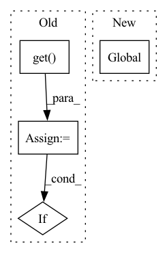

Pattern ID :16869

Before Change
async def track_error(error: ServerError, request: Request):
client = _TelemetryClient.get()
if client:
client.track_data("ServerErrorFound", {"code": error.code, **_process_request_info(request)})
After Change
async def track_error(error: ServerError, request: Request):
global telemetry_client
data = {"code": error.code}
if isinstance(error, (GenericServerError, EntityNotFoundError, EntityAlreadyExistsError)):
data["type"] = error.type
In pattern: SUPERPATTERN
Frequency: 3
Non-data size: 4
Instances
Fragment ID: 56490895
Project Name: recognai/rubrix
Commit Name: 5ff0a480993fc9e594dc097ea25cf846d9123016
Time: 2023-03-10
Author: francis@argilla.io
File Name: src/argilla/server/commons/telemetry.py
M Class Name: AnonimousClass
N Class Name: AnonimousClass
M Method Name: track_error(2)
N Method Name: track_error(2)
M Parent Class:
N Parent Class:
M File Name: src/argilla/server/commons/telemetry.py
N File Name: src/argilla/server/commons/telemetry.py
M Start Line: 104
M End Line: 108
N Start Line: 98
N End Line: 106
'>
Before Change
async def track_bulk(task: TaskType, records: int):
client = _TelemetryClient.get()
if client:
client.track_data("LogRecordsRequested", {"task": task, "records": records})
After Change
async def track_bulk(task: TaskType, records: int):
global telemetry_client
telemetry_client.track_data("LogRecordsRequested", {"task": task, "records": records})
'>
Fragment ID: 56490894
Project Name: recognai/rubrix
Commit Name: 5ff0a480993fc9e594dc097ea25cf846d9123016
Time: 2023-03-10
Author: francis@argilla.io
File Name: src/argilla/server/commons/telemetry.py
M Class Name: AnonimousClass
N Class Name: AnonimousClass
M Method Name: track_bulk(2)
N Method Name: track_bulk(2)
M Parent Class:
N Parent Class:
M File Name: src/argilla/server/commons/telemetry.py
N File Name: src/argilla/server/commons/telemetry.py
M Start Line: 110
M End Line: 114
N Start Line: 110
N End Line: 112
'>
Before Change
async def track_login(request: Request, username: str):
client = _TelemetryClient.get()
if client:
client.track_data(
"UserInfoRequested",
{
After Change
async def track_login(request: Request, username: str):
global telemetry_client
telemetry_client.track_data(
"UserInfoRequested",
{
'>
Fragment ID: 56490896
Project Name: recognai/rubrix
Commit Name: 5ff0a480993fc9e594dc097ea25cf846d9123016
Time: 2023-03-10
Author: francis@argilla.io
File Name: src/argilla/server/commons/telemetry.py
M Class Name: AnonimousClass
N Class Name: AnonimousClass
M Method Name: track_login(2)
N Method Name: track_login(2)
M Parent Class:
N Parent Class:
M File Name: src/argilla/server/commons/telemetry.py
N File Name: src/argilla/server/commons/telemetry.py
M Start Line: 116
M End Line: 125
N Start Line: 116
N End Line: 125